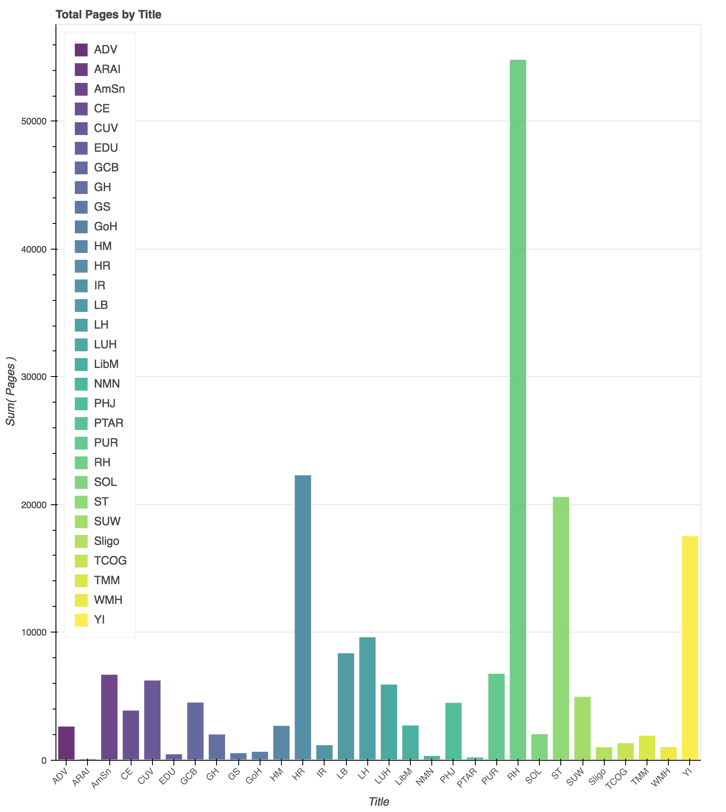
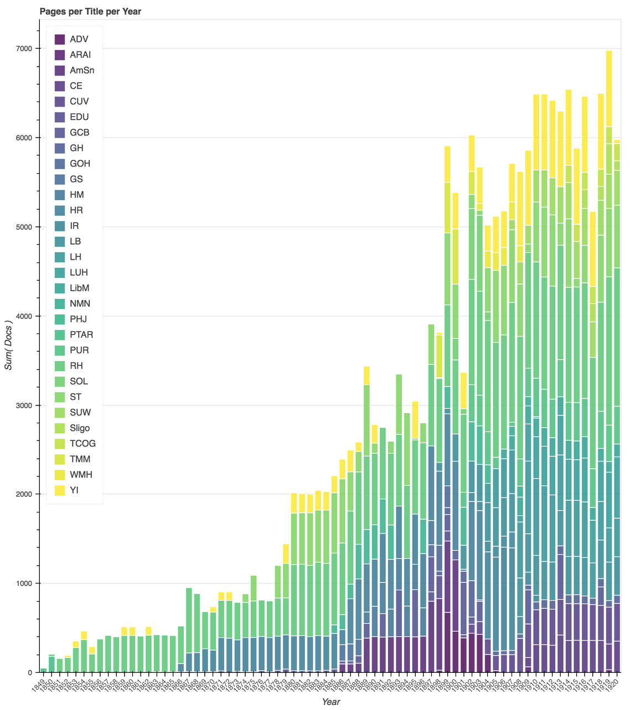

“We are living in the closing scenes of this earth’s history. Prophecy is fast fulfilling. The hours of probation are fast passing. We have no time – not a moment – to loose.”
Ellen White. Testimonies for the Church, Volume 8, 19041
Early Seventh-day Adventists were a people between times. Born out of the belief that William Miller had correctly identified 1844 as the year revealed in the books of Daniel and Revelations, this group of Protestant Christians understood themselves to be living in the last days, preparing for the rapidly approaching “second advent” of Jesus. Millennial expectation, however, is a difficult state to maintain. Although Seventh-day Adventists determined early on that predicting the date of the second coming was no longer viable, at various period throughout their early history they understood themselves to be at the brink of the second coming. As the second coming continued to be delayed, their interpretations of the events since 1844 shifted, as did the emphasis they placed on different religious beliefs and practices.
This chapter explores when those periods of heightened expectation were and what denominational members emphasized in their wake through an examination of a 250 topic model of the periodical literature of the denomination. This exploration is built on the hypothesis that heightened expectation can be seen in the periodical literature of the denomination through spikes in the prevalence of language about end times. By charting the prevalence of end-time discourse, we can trace the gradual lengthening of the Seventh-day Adventist sense of time, while also identifying periods of disruption and re-establishment that shaped the development of their particular religious culture.
Methodology
One of the ongoing challenges for scholarship that brings together methods from multiple disciplines is articulating how the information derived through methods typically foreign to humanities practice meaningfully contributes to the process of meaning-making. As argued by Tanya Clement, the linking of theory and methods is crucial to the process of situating the intellectual work of interdisciplinary scholarship.2 As part of bridging that gap, here I outline my interpretive strategy for moving from the topic model, a statistical representation of language patterns, to an argument for overall patterns in the denominational corpus.3 The full model, which you can engage via the model browser, parses the language of the denomination into 250 clusters of words that tend to co-occur on the pages of the periodicals.
The modeling algorithm returns a topic identifier for each word in the documents, an account of the most prevalent words in each topic, and a report of the prevalence of each topic in the documents of the corpus, but is agnostic as to what those topics “mean.” Standard practice is to use a topic label to summarize the language that a topic has grouped together, either by assigning it automatically from the most prevalent words in the topic or through manually assigning topic names.4 Because the language used by Seventh-day Adventist authors tends to be abstract and formulaic, methods for automatic labeling that work well in the context of scientific articles or Wikipedia proved less than informative. As a result, I relied on a human authored approach for identifying and labeling the topics.
Labeling the topics represents significant interpretive work based on close readings of the texts and the topic words. To mitigate the risk of reading too much into individual combinations of words clustered by the modeling algorithm, for each topic I read the ten to fifteen documents with the highest concentration of words assigned to that topic, and used that contextual information, together with the words of the topic, to construct the label. This method of close reading the topic results provided a more nuanced view of the pattern of word use the model had detected and helped me parse instances where similar words in the topic captured very different sets of documents. For example, topic 6 shares similar language with the “prophecy” topics that I discuss in the next section, such as the high prevalence of “daniel” and “babylon.” However, in reading the documents associated with the topic, it was apparent that the words captured by this topic were most often found in pages that contained Old Testament stories, particularly those from the historical and prophetic books such as Daniel in the Lion’s Den and the story of Esther.
Through the process of labeling the generated topics, I as the reader and interpreter bridged the gap between the model of the denominations literature created using a statistical algorithm and the models of literature created through traditional close-reading techniques. Working with set of text too large for me to read thoroughly and establish the categories of which on my own, I use the model to separate the texts into groups based on language use, use close reading of a select number of documents to understand the themes that the topic model has captured, and then use the model to get a sense of how that theme is present in the documents I have not read.
In addition, in order to more easily facilitate grouping related topics together, I created a controlled vocabulary of [x] terms. The vocabulary works to capture the major topics of the periodical literature, as separated by the topic model and identified through my evaluation, and forms the first part of the topic label. The second part of the label provides a more detailed description of the type of content within that general category. I designed this labeling scheme in order to facilitate the research goals of the project. At 250 topics, the model of the literature strikes a compromise between being generalized and being detailed. As a result, there is some overlap in topics. This provides the advantage of nuance and increases the opportunity to see shifts in language over time. However, it also makes the model more difficult to read and understand, as the fragmentation of theme over multiple topics makes is difficult to grasp broader trends. By using the labels to group topics back together, I am able to add yet another lens through which to view the corpus literature.
The labels enable readers navigate the model and provide the foundation for the work that follows in which I trace the broader picture of the prevalence of particular subjects at different times. By moving back and forth between close readings of the text and the more abstract and distant reading of the model, the reader can begin to understand and explore the overall patterns in the literature and use those patterns to identify areas for closer analysis.
[Note: This is a work in progress. Most of the current topic labels are a tentative “first draft” and are being reviewed according to the process described above.]
The Language of End Time Expectation
[something - secondary literature to set this up.]
There are three interrelated themes that frequently occur when Seventh-day Adventist authors are concerned with and discuss the second coming. The first is a more formal explication of the key prophetic texts of Daniel and Revelations, where authors unpacked for the readers the meaning of the various figures and numbers in the biblical passages. [more] The second is in formal descriptions of the second coming,[ details coming ]. And the third is the parsing current and historical events in terms of their fulfillment of prophecy, or analyzing the “signs of the times.” United by the idea that “Prophecy is history in advance,”5 Seventh-day Adventist authors and readers sought to understand where they stood in the temporal landscape, to verify their understanding of 1844 and their particular role in the unfolding of God’s plan, and to explain the events of the day in light of the larger trajectory of God’s plan.
Explicating Prophetic Texts
For Seventh-day Adventist authors, the books of Daniel and Revelations offered the keys to understanding historical events and for anticipating those to come. These books, part of the Apocalyptic literature of the Bible, look forward in time and tell of the overthrow of the major powers of the day and the eventual establishment of God’s kingdom.6 Containing visions populated with fantastical symbolic creatures, from a leopard with four wings and four heads to beasts and dragons, the authors used coded language to encourage their audience with hope of the coming fall of oppressive powers and coming days of peace.7
Seventh-day Adventist authors derived their understanding of how to interpret these text and what they represented from William Miller. Born into a religious Baptist family, Miller embraced deism in his 20s, but found himself religiously unsettled by his experiences during the War of 1812. Returning to the Baptist church, he experienced a religious conversion marked by being overwhelmed by emotions and feeling the truth and value of the Baptist narrative of salvation.8 With a faith grounded in a conversion experience, Miller turned his attention to understanding and articulating the reasonableness of that faith. Working from a set of fourteen rules, which he derived from Biblical proof texts, he developed an interpretation of the Bible, and particularly the prophetic texts, that resolved its apparent contradictions – thereby satisfying the critiques of his deist friends – and that also revealed the approximate date of the looked-for second coming: 1843.9
Figure 3.: Charles Fitch, Chart of the Visions of Daniel and John. Poster. Boston: 1843. From the Adventist Digital Library
Charts, such as the one to the left, were used by Millerite preachers to explain to audiences how to interpret the prophecies in Daniel and Revelations. Part of the publishing and outreach efforts of Joshua V. Himes, the charts provided a visual representation of Miller’s complicated interpretive work. In the upper left corner, the images from Daniel are depicted and aligned to show their correlation, with the head of the statue of Daniel, chapter 2, aligned with the lion of Daniel, chapter 7, the silver chest and arms of chapter 2 with the bear of chapter 7 and the ram of chapter 8 and so forth. Across the middle, the chart bridges between the books and Daniel and Revelations through the depictions of “Pagan Rome” - the iron legs of the statue in Daniel 2, the beast of Daniel 7, and the dragon of Revelations 12. The bottom half of the chart correlates the events of history since Jesus’ death with the extended images of Revelations. All of these different elements are tied together through the dates and computations that associate the years of different historical events with the periods of time recorded in the prophetic texts.
Early Seventh-day Adventists reconciled the continuation of time after 1844 with Miller’s interpretations by arguing that Miller’s interpretation as basically correct, but that they had misunderstood the significance of October 22, 1844. While most Millerites either concluded that the dates had been miscalculated or that Miller’s whole enterprise had been misguided, a small group embraced an interpretation put forward by Hiram Edson that the “cleansing of the sanctuary” referred not to the earth as Miller had thought but marked “a new phase of Christ’s ministry in heaven that placed the earth under judgment.”10 How long this new phase would last was unknown, but believers could point to the fulfilled prophecies to know that they were indeed living in the last days.
As a result, the Millerite charts and interpretation of Daniel and Revelations continued to play a central role to Seventh-day Adventist efforts to situate themselves temporally. Captured across three topics of the statistical model, Seventh-day Adventist authors used the figures and dates of Daniel and Revelations throughout their writings.
Topics Corresponding to the Explication of Prophetic Texts. Model Generated with Mallet, using 250 topics and random seed of 18497.
daniel vision week period end dan prophecy sanctuary date shall jerusalem christ chapter event seventy_weeks gabriel decree point angel messiah
Prophecy (Interpreting Dates and Time)
Figure 3.: Proportion of Words per Year in Corpus Associated with Topic 45 - Figures of DanielFigure 3.: Proportion of Words per Year in Corpus Associated with Topic 130 - Figures of RevelationsFigure 3.: Proportion of Words per Year in Corpus Associated with Topic 215 - Interpreting Dates and Times
[ This section will be a discussion of how the different topics are used at different points in time - while the words are the same, the purposes shift and develop over time. ]
Describing the Second Coming
[ This section will set up the general contours of SDA anticipation of the second coming. ]
Topics Corresponding to Descriptions of the Second Coming. Model Generated with Mallet, using 250 topics and random seed of 18497.
russia turkey power russian europe war turkish turk constantinople england government france germany empire great austria sultan armenian european czar
war peace nation world men great shall earth europe battle let sword armageddon army prophecy preparation spirit strife conflict international
[This section will discuss how those uses shift over time]
Tracing Periods of Expectation
[ The first part of this section will bring these three general themes together to identify overall periods of expectation. ]
[ The second part of this section will tie those shifts to the historical development of the denomination. ]
After Disappointment: Negotiating Religious Authority As Time Continues
[ This section will identify the topics that spike in the periods right after a spike in end-times expectation - identifying what fills the gaps when the power shifts caused by expecting the end start to re-stabilize. This will set the stage for the analysis in the next chapter on the effects of these cycles, together with the domestic emphasis of Ellen White, on the development of the denomination’s culture. ]
I need to link to something …Possibly John Collins.↩
For a full history of Miller see @Judd1987, pp. 17-23; for an Adventist and more apologetic history of Miller, see @Dick1998, p. 3.↩
Judd provides a list of Miller’s fourteen rules of interpretation in @Judd1987, pp. 20-21 These were: “1. Every word must have its proper bearing on the subject presented in the Bible. 2. All scripture is necessary, and may be understood by a diligent application and study. 3. Nothing revealed in the scripture can or will be hid from those who ask in faith, not wavering. 4. To understand doctrine, bring all the scripture together on the subject you wish to know; then let every word have its proper influence, and if you can form your theory without contradiction, you cannot be in error. 5. Scripture must be its own expositor, since it is a rule of itself. … 6. God has revealed things to come, by visions, in figures and parables, and in this way the same things are oftentimes revealed again and again, by different visions, or in different figures, and parables. If you wish to understand them, you must combine them all in one. 7. Visions are always mentioned as such. 8. Figures always have a figurative meaning, and are used much in prophecy, to represent future things, times and events; such as mountains, meaning governments; beasts, meaning kingdoms; waters, meaning people; lamp, meaning Word of God; day, meaning year. 9. Parables are used as comparisons to illustrate subjects, and must be explained in the same ways as figures by the subject and Bible. 10. Figures sometimes have two or more significations, as day is used in a figurative senses to represent three different periods of time … if you put on the right construction it will harmonize with the Bible and make good sense, otherwise it will not. 11. How to know when a word is used figuratively. If it makes good sense as it stands, and does no violence to the simple laws of nature, then it must be understood literally, if not, figuratively. 12. To learn the true meaning of figures, trace your figurative word through your Bible, and where you find it explained, put it on your finger, and if it makes good sense you need look no further, if not, look again. 13. To know whether we have the true historical event for the fulfillment of a prophecy. If you find every word of prophecy (after the figures are understood) is literally fulfilled, then you may now that your history is the true event. But if one word lacks fulfillment, then you must look for another event, or wait its future development … 14. The most important rule of all is, that you must have faith. It must be a faith that requires a sacrifice, and, if tried would give up the dearest object on earth, the world and all its desires, character, living, occupation, friends, home, comforts, and worldly honors.”↩
[Rework section to orient less around publishing and more in conversation with general history of the denomination.]
“Blest Be the Tie that Binds”: Seventh-day Adventism as a Textual Community
Of the many changes that transformed American life in the nineteenth-century, the expansion of the means and networks of communication looms large. As the expanding nation was increasingly connected through railroads and telegraph, the decrease in transportation time and the increasing ease of producing and distributing information aided the growth of religious and political communities despite growing spatial distances. Using print to develop an “imagined community” that spanned both time and space, politicians, reformers, and religious leaders leveraged newspapers and other regular publications to share ideas, unite followers, and support dispersed communities. For religious publishers, the flourishing of religious print enabled preachers and others to “impart a sense of coherence and direction to widely scattered congregations” and in so doing provided the mechanism for the formation of new national religious movements.1 For the readers of religious periodicals of all stripes, the ritual of reading, sharing, and writing helped to create a “sense of interconnection,” of belonging and shared understanding, as fellow travelers along the road.2
The history of the Seventh-day Adventist denomination provides a particularly potent example of the use of print to create and sustain a religious movement. For the early adherents, circulation of periodical literature was the primary mechanism by which the denomination developed its self-understanding and formed community. While these processes were aided by camp meetings and weekly services, the centrality of print in the missionary work of the denomination and importance of correspondence to the community through the periodicals point to the integral role of print as the “tie that bound” the community together.3 In this examination of the print culture of early Seventh-day Adventism, I look at the role of periodical publishing in the development of the denomination. In addition to being the mechanism by which believers developed a sense of community and by which religious leaders developed the doctrinal positions of the denomination, the publishing work of the denomination was integral to the religious practice and institutional organization of the denomination. Orienting around the printed word, rather than around the local congregation or a particular place or person, the denomination’s reliance on print provided the impetus for formal organization, a …
Within a Printing Nation
A newspaper then takes up the notion or the feeling which had occurred simultaneously, but singly, to each of them. All are then immediately guided toward this beacon; and these wandering minds, which had long sought each other in darkness, at length meet and unite.
The newspaper brought them together and the newspaper is still necessary to keep them united … Means then must be found to converse every day without seeing each other, and to take steps in common without having met…
From contemporary commentators to present day scholars, observers and historians of the United States have long commented on the role of print in the creation of American national identity. In his oft-quoted reflections on the American democratic system, Alexis de Tocqueville returned repeatedly to print as the mechanism by which the dispersed and diverse American population organized, politically and socially. Later scholars also frequently return to the question of print and its role in the development of the democratic society. Scholars from Benedict Anderson to David Waldstreicher have examined the ways print publications enabled the creation of national “imagined political communities.”5 Print and reading functioned as rituals by which individuals imagined themselves as part of a larger whole with a set of shared experiences and beliefs.
The growing reliance on print in the eighteenth and nineteenth centuries as the mechanism for creating imagined political communities was supported by advances in transportation. As noted by Daniel Walker Howe, technological transformations in transportation and communication during this period, particularly the railroad and the telegraph, created the material realities necessary for the flourishing of the print culture of the United States. With the expanding Post Office driving both need and use of improved modes of transportation, editors and publishers of all stripes had a strong ally in their quest to distribute their materials as widely as possible. In addition, the Post Office provided benefits to newspapers and periodicals, including low postage rates and complimentary mailing between publishers, in order to encourage the spread of information.6 With an efficient and generally reliable means of distribution in the Post Office, and as technological improvements to presses increased the ease and affordability of printing, the environment was right for the rise of the religious press.
Just as the publication of news helped form a national imagined community, print fostered the proliferation of religious expression during the nineteenth-century. Rather than being limited by the number of lectures and sermons that one could give, by the inclination of people to come to listen, or by the theological preferences of an editor, religious leaders of all sorts could increase the spread of their teaching by creating and issuing their own publications. Building on the patterns of producing and reading partisan newspapers described above, religious leaders and founders from Alexander Campbell and Joseph Smith to Jarena Lee and Nancy Towle used publications to share their testimonies and teachings with the world.7 Religious periodicals not only enabled individual preachers to expand their reach, they provided the platform by which those who engaged by reading could imagine themselves as part of new religious communities.
One often invoked example of this process in the print culture of the early republic is William Miller and his prediction of the end of the world in 1843-1844. In “Religious Periodicals and their Textual Communities,” Candy Brown notes, “New religious groups signaled their entrance into the American cultural milieu by issuing distinctive publications. Miller did not attract a following until 1840, when Joshua Himes publicized his prophetic ideas through a periodical, Signs of the Times.”8 Nathan Hatch, in his discussion of print in the creation of evangelical print culture, refers to the publishing efforts of Joshua Himes to spread and popularize Miller’s adventist teachings as “an excellent case in point” of the ways the cultural climate of the early republic “favored religious insurgents willing to employ fresh strategies to capture public attention.”9 For religious historians, adventism serves as an instructive example of the ways the religious press operated outside of denominational boundaries and enabled religious innovators to reach wide audiences.10
However, while frequently invoked, the print culture of early Seventh-day Adventism is rarely examined beyond linking the reach of Miller’s end-times predictions to the publishing efforts of Joshua Himes or the use of print by James and Ellen White to revive the movement into the Seventh-day Adventist church. I argue that, while the printed word holds a special place in the Christian tradition generally, print was central to the development of Seventh-day Adventism. As I show, it was the primary mechanism by which a dispersed community of Millerites developed their distinctive understanding of the events of 1844, provided the structural incentives for the formal organization of the denomination, and functioned as a pillar of denominational life and missionary activities as the denomination developed into the twentieth century.
Making the Millerites
[image of Millerite in his box]
Of the varied religious movements that developed during the nineteenth-century, one of the more notable were the Millerites, American Protestants drawn largely from Baptist and Methodist congregations who were convinced by the teaching of one William Miller that the Bible revealed that the second coming, or second advent, would take place around the year 1843. Miller, a commissioned militia officer during the War of 1812 and if his biographer is to be believed, a leading citizen of Poultney, Vermont, began his study of the Bible shortly after his conversion from Deism in an attempt to prove the reliability of the Bible by reconciling all apparent inconsistencies he discovered.11 In 1818, he first came to the conclusion that the prophecies, particularly Daniel, revealed that the second coming would take place around year 1843. After spending five years confirming his interpretations and calculation, he began to share his conclusions, starting with family and friends, then reaching out to local ministers. Miller understood his findings as reinforcing the teachings of the churches and as part of the prevailing belief in the second coming and the need for salvation. He slowly began to receive invitations to preach in a variety of churches, including Baptist, Methodist, and Congregational.12 In 1832, he published his findings in the Vermont Telegraph and in 1833, he was granted a preaching license from his Baptist church in Hampton, New York.13 He began preaching and lecturing in churches throughout New England throughout the 1830s and into the 1840s. He published a 64 page pamphlet of his interpretation in 1834 and a series of sixteen lectures in 1836. Between 1834 and 1839, when he began to with Joshua Himes, Miller recorded that he had given about 800 lectures on his interpretation of prophecy and his belief that the time of the second coming was at hand.14
Despite publishing, traveling, and preaching widely, Miller’s teachings would have remained one of many little known local religious movements of the nineteenth century if it were not for Joshua V. Himes. Prior to meeting Miller, Himes had a long history of embracing reform movements as the way to bring about the kingdom of God. Licensed to preach by the Christian Church, he was pastor of a church in Boston, was a Temperance lecturer, started a school for boys, was on the board of the Massachusetts Anti-Slavery Society, was an early supporter of William Lloyd Garrison, and distributed periodicals and other printed materials of the Disciples of Christ.15 Anticipating the coming millennium and already working hard to bring it about, Himes found Miller’s teaching that it would arrive in a mere four years time both striking and deeply motivating. With Miller’s blessing, Himes became his chief publicist, launching a campaign of print and conferences aimed at disseminating Miller’s work as quickly and widely as possible.16 Publishing periodicals such as Signs of the Times, The Midnight Cry, the Philadelphia Alarm, and The Western Midnight Cry, among others, as newspapers of the movement, along with Miller’s The Second Advent and memoirs, as well as tracts, hymns, and prophetic charts, Himes flooded religious readers with material expounding Miller’s teachings. In doing so, he fostered a sense of religious community among adventist believers and created the mechanisms by which Miller’s message could spread.17
At the risk of projecting a modern concept onto the past, it is clear that Himes had an excellent sense of “marketing” — he knew how to engage people in a cause and how to gain, if not converts, at least attention. He worked to ensure the widest possible reach for Miller’s teachings, establishing periodicals in the key cities of Boston, New York, Philadelphia, and Cincinnati. He also understood the value of “showmanship,” acting quickly on a decision to build a “great tent” — one that seated 4,000 people and was one of the largest to be seen in America; publishing and selling colorful charts to illustrate the intricate (and obtuse) details of Miller’s interpretation; and convincing Miller to offer a more definitive date. He also began holding regular conference meetings for those convinced by Miller’s teachings. These gatherings provided a forum for the dispersed community to come together, to work to reach consensus on some of the contested details of Miller’s teaching, and to agree on a strategy for spreading the word.18
Figure 2.1: William Miller’s “Chronological Chart of the World to which is added, a Chart of Daniel’s Visions” (1842). From the Adventist Digital Library. https://adventistdigitallibrary.org/adl-421835/chronological-chart-world. Accessed 6 September 2017.
Figure 2.1: William Miller’s “Chronological Chart of the World to which is added, a Chart of Daniel’s Visions” (1842). From the Adventist Digital Library. https://adventistdigitallibrary.org/adl-421835/chronological-chart-world. Accessed 6 September 2017.
Figure 2.2: Charles Fitch’s “A Chronological Chart of the Visions of Daniel and John.” (1843). From the Adventist Digital Library. https://adventistdigitallibrary.org/adl-421834/chronological-chart-visions-daniel-and-john. Accessed 6 September 2017.
Figure 2.2: Charles Fitch’s “A Chronological Chart of the Visions of Daniel and John.” (1843). From the Adventist Digital Library. https://adventistdigitallibrary.org/adl-421834/chronological-chart-visions-daniel-and-john. Accessed 6 September 2017.
The efforts of Himes launched Miller and his teachings into the public consciousness and created a community around the belief that the second coming would occur between March 21, 1843, and March 21, 1844. In 1842, just two years after he joined the cause, Himes claimed fifty-thousand readers for Signs of the Times and between three and four hundred ministers distributing the materials.19 By 1844, Himes had overseen the foundation of a number of serial publications, tracts, and pamphlets and had organized, attended, and spoken at conferences around the United States and Canada. As a result, Miller himself became highly sought-after speaker, claiming to have given about 4000 lectures in 500 hundred towns between 1840 and 1844. In addition to Miller and Himes, by Miller’s calculations some 200 ministers in the United States and Canada had embraced his interpretation, and an additional 500 public lecturers circulated his view.20
Miller did not set out to form a new movement or denomination. Rather he saw his teachings as within the bounds of the prevailing orthodoxy, as the logical conclusion of prevailing Protestant beliefs. He made no effort to start his own church and did not wish to be identified as a “sectarian leader,” instead encouraging followers to stay within their home denominations. In claiming success, he notes that, as result of his early lecturing, “many churches thereby greatly added to their numbers,” a statement that reinforces that he saw his goal as the revival of the local church, not the creation of his own.21 He saw his teaching of the imminent second coming to be a truth of general interest for all denominations, and one that would (or should) be embraced regardless of denominational affiliation.22
This did not always go according to plan, as the experience of the Harmon family illustrates. In her autobiography, Ellen (Harmon) White reports, “At the age of eleven I was converted, and when twelve years old was baptized, and joined the Methodist church.” Upon hearing William Miller lecture on the topic of the Second Advent at age of 13 (1841), she “then felt that I was not holy, not ready to see Jesus” and so “when the invitation was given for church members and sinners to come forward for prayer,” she went forward in the belief that “I must have a great work done for me to fit me for Heaven.”23 Although already converted, baptized, and a member of the church, the news that the second coming would occur in two years time caused White to call her faith into question. She began regularly attending “Second Advent meetings,” seeking “full and free salvation” from God.24 She received the confirmation she sought when she obeyed God’s prompting to “pray in a public prayer-meeting.”25
Convinced of her salvation and full of anticipation for the return of Jesus, she returned to her Methodist class-meeting some six months later to share “what Jesus had done for me, and what a fullness I enjoyed through believing that the Lord was coming.” This message, however, was not acceptable to the local Methodist class-leader, whom she reports interrupted her testimony to add “Through Methodism,” an addition she rejected because “it was Christ and the hope of his soon coming that had made me free.”26 Eventually the tensions between Harmon family and the local Methodist minister over their Millerite convictions became too great and the family was “at one time cast out of the Methodist Church.”27
Local communities of adventist believers emphasized regular attendance at the local Protestant Sunday services, but also attended their own interdenominational meetings of those who believed the second coming was at hand. Dedicated to sharing the news of the second coming with their neighbors and religious fellows, members of Millerite associations often found themselves at odds with their local religious leaders.28 Finding community among other adventists and meeting resistance in their local churches was often too much for individual believers, prompting them to leave their home denominations and claim an adventist identify. While Miller himself was quite distressed by this trend, it set the stage for new denominations to form in the wake of the disappointments of 1844.29
Because of the non-denominational aspects of Miller’s preaching and because multiple dates were eventually given for the second Advent, the total number of people who joined Miller in anticipating the second coming and the end of the world is difficult to determine. Miller estimated that there were 200 ministers and 500 lecturers who were had embraced his teachings. In the years after the 1844, the New York Tribune estimated that there were 30-40,000 Millerites at the movements peak. The high end of estimates puts the peak number at 100,000, though Miller himself claimed that about 50,000 embraced his message, calculating based on the number of conversions he witnessed in his lectures.30 These were the believers — those who embraced Miller’s interpretation as, quite literally, gospel truth. Given the massive amount of literature produced by Himes, however, it is likely that many more quietly marked the passage of 1844 with interested skepticism. What is clear is that, although Miller was able to preach to nearly 500,000 people, what propelled his teaching from local anticipation to an international movement was the coordinated publishing efforts of Himes.31
As would be the case for the early Seventh-day Adventists, Himes recognized the power of print and effectively deployed it as the center around which the Millerite movement formed. Regular publications spread the content of Miller’s interpretation, raising awareness of his findings. Those same publications provided the forum by which Himes organized the regular conferences, inviting interested people to gather together to coordinate their efforts to spread the news of the coming millennium, and advertised upcoming tent meetings. Reports about the successes of the camp meetings helped the community to take part in the events regardless of geographic proximity, and served as further proof of the truth and successfulness of the adventist message, for if God were not behind the movement, the events would not be successful. In addition, Himes strategically started multiple publications in different cultural and geographic centers on the U.S., increasing the coverage that the movement could achieve and catering to regional interests. This was a strategy that the Seventh-day Adventists would later emulate, first as they came together around the publication of a new interpretation of Miller’s teachings and the events of 1844, and later as they sent out missionaries, establishing printing houses in each new geographic region they entered.
From Millerites to Seventh-day Adventists (1844-1863)
As the period Miller identified between March 21, 1843 and March 21, 1844, passed, adventist believers began to develop a number of alternative theories to address the persistence of time. A temporary reprieve from the crisis caused by persistence of time was granted when a young man named Samuel Snow announced that he had identified the error in Miller’s calculations and that October 22, 1844, was the correct date indicated for the second coming. While acceptance of that interpretation brought unity back to the movement for a time, with the passing of the October 22, which came to be known as the Great Disappointment, the tensions between the various groups of adventists became too great to maintain a unified movement.
The adventist community did not collapse immediately after the final disappointment of October 22, 1844. While Himes briefly suspended publication after the October 16 issue of The Advent Herald and Signs of the Times Reporter, in anticipation of the second coming, when the day passed without event, he quickly regathered, releasing a new issue on October 30, 1844. Still convinced of the truth of the core of the adventist message, that the time of the second coming was at hand, he offered a retelling of the history of the adventist movement that emphasized the nuances of their teachings around the date of the second coming and downplayed the significance of the October date.32 However, understanding and explaining the persistence of time posed a significant challenge for the community.
Many of those who had joined the adventist cause leading up to the October date returned to their original religious homes, joined other movements, such as the Shakers, or left the faith all together. Among those who remained committed to Miller’s teachings, the movement split into two main groups: those who held that the end was indeed near but they had been mistaken about the date; and those who held that the end was indeed near but that they had been mistaken about the significance of the date. The debates between these groups took place on the pages of the main adventist papers, as well as in the pages of new periodicals started to promote various interpretations of the nature and timing of the Second Advent.33 While Miller himself continued to believe that his interpretation was correct and the second coming was at hand, he ceased to offer or support any definitive date predictions after 1844.34
Those who would come to form Seventh-day Adventism were part of the second category of movements to come out of adventism, believing that Miller had been correct in his interpretation of the Bible, and his endorsement of October 22, 1844, as the date prophesied but incorrect about what that date signified.35 They embraced what were considered some of the more radical theological positions discussed in the wake of the 1844. First, they embraced the teaching of “conditional immortality,” viewing the standard teaching of an immortal soul to be extra-biblical, arguing instead that people would be granted immortality (or not) at the resurrection. Second, this group of Adventists embraced the Seventh-day Baptist position on keeping Saturday, rather than Sunday, as the Sabbath. Third, rather than question the date Miller and Snow had given for the second coming, the founders of Seventh-day Adventism questioned the event that the date marked, holding what became known as the Sanctuary Doctrine. This was the belief that October 22, 1844, marked the beginning of Christ’s work cleansing the sanctuary, which was “heavenly,” rather than being the earth as Miller had assumed, and there Jesus was undertaking the work of “blotting out sins” ahead of his second coming. Fourth, they embraced the existence of prophetic gifts, the belief that God would speak directly through an individual to provide guidance and new revelation for a community. For the early Seventh-day Adventists, this gift was primarily limited to Ellen (Harmon) White, though early on a number of people claimed to have received visions. Finally, although this was eventually abandoned, they embraced the “shut door” doctrine, holding that October 22, 1844, marked a closing of the period of salvation and only those who had accepted adventism prior to the date could be saved.36 As with others who continued in the Adventist faith after 1844, all of these beliefs hinged on a core belief that the waiting time they were now in would be short and that the second coming would take place soon.
As for many of their adventist contemporaries, publishing was central to the efforts of the nascent Seventh-day Adventist community to articulate and share their views. While there were a number of figures who contributed to developing what would become the main points of Seventh-day Adventist theology, the key figures for understanding the development of the denomination and the use of print to unite and grow a community of believers are James and Ellen (Harmon) White. Ellen Harmon White established herself early on as an authoritative prophetic voice for an adventist community struggling to understand how to reconcile their interpretation of the Bible and the events they experienced. James White, who had worked as a Millerite lecturer and correspondent, was one of her earliest converts and became her primary publicist. It is through their combined efforts that the Seventh-day Adventist church coalesced and grew in the years after 1844.
Starting in December of 1844, the sixteen-year-old Ellen Harmon began to experience visions related to the events of October 22, 1844, visions that provided evidence for what was considered to be the more radical interpretations of the Adventist movement and the continuation of time. Her first vision, experienced during a prayer gathering with four other young Adventist women, affirmed the central become a core principle of Seventh-day Adventism: that the October 22, 1844, date had been correctly determined and marked the end of the period of 2300 days (interpreted as years) described in Daniel 8:14. While Miller and Himes had understood the end of that “2300 day” period to correspond with the second coming, Harmon and others pointed instead to the end of the period corresponding to the start of Jesus’ judgment of souls, which they now understood as taking place in heaven, not as part of the second coming.37 The answer of what to do with the vision came one week later, as Ellen reported a second vision instructing her to “go and relate to others what he had revealed to me,” a task she was warned would come with no small about of trouble.38 Harmon embarked on the life of the religious itinerant, traveling around New England with family and friends, and sharing her vision to the local Adventist community.39
In 1845, while visiting various adventist meetings to share her visions with the community, Ellen Harmon met and gained a convert and ally in James S. White, a Christian Connection preacher and adventist lecturer. United in the mission to share the adventist message as understood through Ellen’s visions, the two began traveling together around New England, an arrangement that caused no small amount of speculation. While initially holding that marriage suggested a lack of faith in the nearness of the second coming, propriety eventually won out and on August 30, 1846 the two married.40
Both James and Ellen (Harmon) White were familiar with the adventist strategies for evangelism, which combined print, itinerant lecturing and testimony sharing, and periodic tent meetings and local conferences. James White had been an active Millerite lecturer during the years leading up to 1844 and continued as an active correspondent with adventist periodicals in the years after the Great Disappointment, including the Advent Herald, the Advent Herald and Bible Advocate, and The Second Advent Watchman, papers that represented three of the major groups that developed out of adventism.41 In these he reported back to the community about camp-meetings held and argued for theological positions, such as conditional immortality. Ellen had also been active in the local Millerite community, speaking at local churches and class meetings about her experience and her belief in the coming end of time prior to the events of 1844.42
In addition to giving testimony in person, Harmon wrote of her visions to a number of adventist leaders and publishers. In December of 1845, one year after her first post-Disappointment visions, Ellen Harmon wrote a letter to Enoch Jacobs, editor and publisher of The Day Star, originally the adventist publication, Western Midnight Herald, describing her vision of “the Advent people” on their journey along the narrow way toward heaven and affirming that those who had embraced Miller’s teachings were indeed on the “narrow path” to heaven.43 As noted in the issue of The Day Star, and a subsequent letter by Harmon, this letter was purportedly not intended for publication, however, White quickly followed up with a second publication to further clarify her message and affirm that the church had now entered a waiting period before Christ’s second coming. With her visions now circulating among the adventist communities through The Day Star and other periodicals, the couple also began to produce their own materials to share Ellen’s particular vision. In 1847, noting that the publication which they had intended to publish with was no longer producing new issues, James began to produce pamphlets and broadsheets offering his exegesis and Ellen’s visions to help the adventist community make sense of their current position in the unfolding of the end times.44 In 1846, Ellen met Joseph Bates, a leader among the Millerites and a proponent of “Seventh-day” sabbatarianism, or the belief that Saturday, rather than Sunday, was the commanded day of Christian observance. While initially skeptical of Ellen’s visions, Bates was eventually convinced, and published an account of them in 1847 with his own introduction of her as a prophet to the adventist community.45 The evangelistic culture of the Millerites and adventists provided James and Ellen a template for how to reach the community with their particular message, leverage existing networks of print and public speaking to reach a wider audience with their good news.46
While the publishing efforts of the White’s initially took the form of more singular publications, or relied on existing adventist outlets, in 1849 James White began to produce his own title, The Present Truth. His goal for the title, as described in its initial issue, was to reach the “scattered flock” with the “present truth” as quickly as possible, for the second coming was at hand.47 Central to that “present truth” was the necessity of keeping the Decalogue (the ten commandments) and the teaching that the commandment to “honor the Sabbath day” required Christian observance on Saturday (Friday sundown to Saturday sundown) rather than Sunday.48 In 1850, and at least partially in response to some criticism of the White’s efforts to create a new publication, Ellen published an account of her vision on September 23 of that year where she was shown that they were in the “gathering time” where God was bringing his people together and to a shared understanding of the adventist message, an effort that required “that the truth be published in a paper, as preached.”49
James and Ellen saw these publications initially as a short term endeavor — anticipating the quick success of their mission to bring together the adventist community around the belief that October 22 had marked the beginning of an interim period of Christ’s “investigative judgment.”50 But as time continued and interest grew in the publication, it became clear that this would be a longer endeavor. While the initial issues were overall uni-directional, offering arguments for the Sabbath and accounts of Ellen’s visions, by the third and fourth issue of The Present Truth, the publication began to take on a community building function. In Volume 1.3, published August 1849, James printed a notice about upcoming conference meetings to be held in Vermont and Maine by Joseph Bates. In Volume 1.4, published September 1849, he included a letter from “J. C. Bowles” who wrote from Jackson, Michigan to send word that they had received The Present Truth, to report on the success of Bates’ trip west, and to suggest that James “insert extracts of the letters you may receive from the brethren” as to hear such would be “comforting … to hear from others” and “may induce some to examine the subject, that would not otherwise.”51 While James notes that he did not intend initially to publish letters from the “brethren,” such quickly become a regular feature of The Present Truth and its successor, The Second Advent Review and Sabbath Herald (generally referred to as The Review and Herald). By the last issue of The Present Truth – Volume 1.11, published November 1850 – over half of the publication is devoted to letters from readers and fellow seventh-day proponents, responses to controversies within the community (in this case regarding the eating of pork), news about recent and upcoming meetings, and the sale of other literature, including hymnals and prophetic charts.52
The publication location of the White’s initial periodicals reflect the family’s, and the religious community’s, movement from upper New England toward the West. Initially based out of Maine, where the Harmon family was located, as early as 1849 their teaching had been brought as far west as Michigan through the preaching of Joseph Bates. In 1851, in order to make it easier to travel to the far reaches of the dispersed community and to more cheaply distribute the periodical, the White’s moved their publishing operation to upstate New York, first to Saratoga Springs, and in 1852 to Rochester.53 Repeating the Millerite strategy of combining publications, traveling lecturers, and tent meetings to create and hold the community together, the editors of The Review and Herald understood the role of the paper as central to that effort, that for a people “thus scattered, and surrounded by unbelief and opposition, you certainly need the weekly visits of a paper devoted to the present truth.”54 In 1855, the community in Battle Creek, Michigan, offered to establish a more permanent home for the denominations publishing efforts, including a press. By October of that year, James and Ellen relocated to Battle Creek, and the community called a general conference to decide who would run the daily operations of the publication.55 Battle Creek would remain the cultural and political center of the denomination through the rest of the century.
So central was publishing to the religious movement, that by 1860, the logistical concerns of running a successful publishing operation pushed James White and others toward discussing legal incorporation of the press and the denomination. During a general conference held in Battle Creek in the fall of 1860, called in order to discuss “the proper method of holding church property, the want of our Office of publication, &c.,” James White presented the case for incorporation.56 Noting that, as it stood, he was the sole owner of the “REVIEW office” and his desire to see the property owned instead by the church, James White led the argument for a mechanism of legal incorporation. However, this proved a culturally contentious issue for the community of adventists, many of whom understood separation from the state as central to their charge to be a separate people. While individual churches might establish a legal presence for building ownership, the press presented a different challenge for the emerging denomination — a centrally held organization that required some form of central management. Eventually a compromised was reached, creating an “association” for the purposes of legal incorporation of the publishing office and its holdings, while making membership in that association an optional aspect of church membership.57 On May 3, 1861, the Seventh-day Adventist Publishing Association was legally incorporated in Battle Creek Michigan.58 In May 1863, during the annual meeting in Battle Creek, delegates voted to create the General Conference of Seventh-day Adventists as formally organize the political structure of the denomination and outline the relationship between the smaller state conferences and the larger national organization in order to coordinate efforts for the ordination of ministers and the sharing of the Adventist message, including the distribution of the denominational literature.59
Diversification of the Seventh-day Adventist Print Culture
From a humble beginning of 1000 copies of The Present Truth in 1850 to a well-organized publishing operation boasting 20 employees, approximately $39,000 in assets and four thousand dollars in sales in 1865, James and Ellen White successfully deployed print to bring together a community united in their belief in Sabbath-keeping, the “spirit of prophecy,” conditional immortality, and the sanctuary.60 As the SDA continued to grow through the second half of the nineteenth-century into the twentieth, its publishing efforts grew in tandem. By 1920, the publishing arm of the denomination employed 1,125 individuals in 45 publishing houses, produced 144 different periodical titles and literature in 99 languages, with assets valued over 3 million dollars and annual sales amounts over 5.6 million dollars.61 This publishing expansion was more than just a matter of scale, however. Over this period, the denomination expanded its publishing efforts to meet the changing concerns and priorities of the denomination. As such, the development of topical and regional publications reflects the shifts in concerns among denominational members over time and the growing complexity of the denomination.
The second periodical to be added into circulation among the early adventists was The Youth’s Instructor, a title aimed at young readers to instruct and encourage them in the adventist faith. Started in 1852 in Rochester, NY, perhaps not coincidently when the White’s two oldest children were five and three years of age, the periodical offered moralistic stories, letters of encouragement, and Bible-study materials aimed at younger readers. While seemingly innocuous, the creation of a publication to children in fact marks a shift in Seventh-day Adventist thinking. In the first year after 1844, many adventists embraced what became known as the “shut-door doctrine” or the belief that only those who had embraced Miller’s teaching and persevered in the faith would be saved in the soon to occur second coming. Over time, and as new converts appeared to be coming to the faith, this teaching came under pressure and starting in the early 1850s, Seventh-day Adventist leaders who had taught that the door of salvation was shut, including James and Ellen White, began to revise their position.62 Faced with a new generation of adventists to train up in the faith, this shift in doctrine quickly resulted in the creation of a new publication for the encouragement and teaching of children.
The second area of expansion in publishing among the early Seventh-day Adventists occurred around the topic of health. As with many religious writers of the nineteenth-century, both James and Ellen White were well aware of, and involved in, early temperance movements, advocating abstinence from alcohol, tobacco, tea, and coffee. Ellen’s first visions on health in 1848 related to the use of tobacco, and by the 1850s, tobacco use, or rather the lack of it, became a requirement for an SDA preaching license.63 Around 1862, Ellen White discovered Dr. James C. Jackson and hydrotherapy, which she successfully used to aid her sons’ recovery from diphtheria.64 In 1863, she experienced a vision that would launch the Seventh-day Adventist approach to health reform, emphasizing the idea of temperance in all things, water as “God’s great medicine,” and the idea that “it was a religious duty for God’s people to care for their health and not violate the laws of life.”65 Ellen and James became connected to the community of health reformers and were repeat visitors to Our Home, Jackson’s water cure facility in Dansville, New York. However, differences in approach and religious conviction between the White’s and Jackson, as well as a vision affirming the necessity of a Seventh-day Adventist-run water-cure institution, lead the denomination to establish the Western Health Reform Institute in Battle Creek, along with a companion publication, the Health Reformer, in 1866.66 These three publications – the Review and Herald, the Youth’s Instructor, and the Health Reformer – formed the core of SDA publishing through the rest of the nineteenth century.
While Seventh-day Adventism experienced very slow growth in the eastern United States, from early on the movement found its strongest support among those on the leading edge of western expansion. By 1859, Merritt G. Kellogg, brother of John Harvey Kellogg, travelled to San Francisco where he began to establish a small SDA community. In 1868, Kellogg petitioned the denomination’s General Conference to send missionaries to California and the denomination agreed, beginning one of the first organized “missions” of the denomination. Supported by an active fund-raising campaign among the SDA communities around the United States, numerous denominational leaders, includes the Whites, travelled to California to support the efforts there to establish a sanitarium, a training school, and a press. Convinced of the need for a periodical customized to the needs of a growing western constituency of the denomination, James White undertook much of the work to gather funds and supplies for the new press, established in Oakland, California. First published on June 4, 1875, The Signs of the Times was the last periodical that James White helped to establish for the denomination. He set out for the periodical to be the organ for the SDA’s western activities, providing a more efficient mechanism for communication among the western community and a means for speaking to the concerns of those on the west coast of the United States.67 Over time, as additional titles were produced out of the Oakland publishing office, this effort became incorporated into the second SDA publishing association, the Pacific Press.
In addition to geographically driven publications, the first 15 years of the denomination also saw an increased interest in sharing the Seventh-day Adventist message in languages other than English. In the 1870 annual meeting, delegates adopted a resolution to “do all that lies in our power to publish works in their respective languages” to serve those within the community who were from foreign countries and for whom English was not their primary language.68 By the first publication of the SDA Yearbook in 1883, four foreign-language titles were being produced out of the Review and Herald offices in Battle Creek, Michigan, and were included in the catalogue of SDA literature, for readers of Danish, Swedish, German, and Dutch, in addition to one French-language publication produced in Switzerland.69
During this initial period, the publishing efforts of the denomination reflect a continuation of the initial patterns used to bring together the SDA community. With the Review and Herald at the center of denominational life, denominational leaders authorized new titles primarily to address logical concerns, whether that be providing a more efficient means of organizing and communicating in the West or reaching new adherents in their own languages. With membership in the denomination growing from approximately 3,500 in 1863 to a reported 15,370 members in 1880, the periodicals of the denomination articulated the SDA’s distinctive positions and served as the literary core of the developing denomination.70
The publishing activities of the SDA began to diversify in the 1880s and 1890s as the denomination responded to the growth of its membership, a diversification of interests and institutions within the denomination, and to new challenges to its political and organizational structure. An increase in SDA institutions resulted in a rise of new publications aimed at communicating institutional work to the wider denomination, such as Life Boat, Gospel of Health, and The Training School Advocate. Such publications performed an outreach as well as marketing role for the institutions, keeping the growing denominational membership aware of their particular activities and inviting engagement through journal subscription, the purchase of products, or attendance at said institution. Where earlier this work had been done within the pages of the Review and Herald, over time it became of interest to particular institutions to manage their own presence in print.
As time progressed, denominational members also began to focus more intentionally on missions, both foreign and domestic. Publications such as The Home Missionary were commissioned by the denomination to coordinate monthly services on the missions work of the denomination, while publications such as The Gospel Sickle were crafted as missionary tools, providing a focused presentation of the denomination’s teaching intended to persuade readers to convert. Just as SDA institutions began publishing their own materials to raise awareness and interest, periodicals focused on various missionary fields also emerged, such as the Gospel Herald, which focused on the SDA’s missionary (and economic) venture in the American South. What had begun as missionary work in the West continued to expand, and to meet the needs of Western readers, the Pacific Press began to produce a second denominational health publication, the Pacific Health Journal.
Two new causes gained particular momentum within the denomination in the 1880s and 1890s: education and religious liberty. While the religious instruction of children had long been the priority of The Youth’s Instructor, starting in the 1880s, Ellen White and others within the denomination turned their attention to questions of educational theory. This attention resulted in the development of curriculum for the growing SDA school system as well as new periodical titles devoted to questions of educational reform, including the Christian Educator. While the educational work of the denomination was inwardly focused, the rise of Sabbath reform movements of the late nineteenth century pushed denominational leaders to engage with external political realities under the subject of “religious liberty.” In publications, such as the American Sentinel, SDA leaders used the language of the constitution to argue against the passing of any laws requiring Sunday observance and for the separation of church and state on such issues.71
Seventh-day Adventist publishing underwent some significant changes in the beginning of the twentieth-century. Additional growth within the denomination meant that the main denominational publications could no longer fulfill the community organizing role they originally played. As a result, local and regional conferences began publishing their own titles, such as the Pacific Union Recorder and the Northern Michigan News Sheet, to share local community news and report on the religious activities of the local area. While the Review and Herald was still the central organ of the denomination, and still provided an overall account of the activities of the denomination, it did so in a more abstract fashion, publishing summaries of letters, rather than the full content, for example.72 The topical interests of the denomination continued, focusing on the missionary activities of the denomination, education, health, and legal protection for the free practice of religion.
In addition to a shift to regional publications, the main denominational headquarters moved from Battle Creek, Michigan, to Takoma Park, Maryland, in 1903, after the publishing plant in Battle Creek burned on December 30, 1902.73 The fire occurred as the denomination was in the process of reorienting itself to be more global and missions oriented. This involved the creation of new “Union” conferences to guide the smaller state and regional conferences, the addition of vice-presidents for different major geographic regions, and the increase in missionary focus both within the United States and abroad.74 While the denomination was in some ways de-centralizing during this period, it still relied on the main publishing departments to provide continuity and a sense of community across the growing the denomination. Titles such as The Church Officer’s Gazette offered a means of communication particular for church leaders, offering guidance and recommendations on the organization of services and the management of the church. The twentieth century also saw a flourishing of student publications produced at the growing number of Seventh-day Adventist colleges. These publications, such as The Sligonian, provided students training in the management of a publication while also serving as a platform for future denominational leaders to articulate their experiences and understanding of the Seventh-day Adventist faith. While the Review and Herald remained the weekly publication at the center of the denomination into the twentieth century, the publishing activities of the denomination continued to diversify, as the growing number of members and a diversification of activities and institutions created the need and the audience for a growing publishing ecosystem.
The development of the publishing efforts of the Seventh-day Adventist denomination was centered on the developing mission of the denomination, as they expanded to accommodate the growing number of members and to address a growing range of social concerns connected to their understanding of salvation and the “requirements” for the second coming. The logistics of being a geographically dispersed and multilingual denomination drove much of the early expansion of the publishing offices, and over time they developed an effective pattern of establishing a publishing house, school, and health facilities in the areas where they were establishing a missionary presence. Because the various publishing houses shared a mission of promoting the Seventh-day Adventist faith, and due to a commitment to service over market competition, the various publishing houses coexisted well, with each serving its designated geographic area so as to not harm the sales of its counterparts.75
Print and the Creation of Community
From the beginning of the religious movement, the leaders of the SDA embraced publishing as the foundation of the religious activities of the denomination, from James and Ellen White using print to unite the “scattered flock” to their ongoing mission of the publishing association to disseminate the “third angel’s message” to the world. In this, they were not dissimilar from their religious and reform-minded peers, using the growing infrastructure of transportation and communication to spread their ideas and create a community through the print. What is notable about Seventh-day Adventist publishing is how central it was, and remains, to religious practice within the SDA. Unlike other Protestant traditions, such as the Baptists, which centers on the local congregation, the Seventh-day Adventists created a dispersed but centrally guided religious movement. Using regular publications to bridge gaps of space and time, Seventh-day Adventism developed their religious culture around print as a primary medium of communication.
Through that reliance on the printed materials for the denomination, the distribution of SDA literature took on additional significance as a way for lay community members to contribute to the mission of the denomination. From the earliest days of James’ publishing of the Present Truth and asking for help with distribution, sharing the Adventist understanding of the “third angel’s message” has been central to the mission of the religious movement. Distributing Adventist literature, or serving as a “colporteur,” was a way for lay members of the denomination to become involved in the work of the church. “Self-supporting” institutions, such as the Nashville Agricultural Normal Institute, encouraged students to work as colporteur’s as a way of paying for their education. Church members were (and still are) encouraged to hand out literature to friends, neighbors, and acquaintances as a way of engaging in evangelism.
This connection between faith, mission, and publishing has also been expanded to the digital age, as the SDA has, with an expansiveness not undertaken by other denominations, has devoted resources to creating and releasing digital copies and editions of their history. Recently these efforts have been consolidated in the Adventist Digital Library, a central website with content contributed from a range of Seventh-day Adventist schools and archives, along with the General Conference of the denomination and the Ellen White Estate. With a mission of helping to “spread the gospel of Jesus Christ to the world through direct and unlimited access to Adventist historical materials, as well as current resources available within copyright boundaries,” the digital library and the digitization efforts of members of the denomination translate the SDA emphasis on print into the twenty-first century.
As with many Christian traditions, the printed word holds a central place in the religious life and thought of Seventh-day Adventism. But beyond that veneration of word, for Seventh-day Adventists the printed word has, since the beginning, been one of the central “ties that binds” the community together. While the printed record is generally of value to historians as a source for understanding the past, in the case of Seventh-day Adventism, it is a particularly potent source, a distributed and periodic “scripture” deployed with good effect to share their distinctive message with the world and as a means of creating and sustaining their community. It is because of that centrality of text to the denomination, and their ongoing commitment to making those text accessible across multiple media, that these text can serve as the basis for a computational analysis of the development of SDA beliefs and culture.
John Fawcett, “Blest be the tie that binds.” Published in Adventist hymnals starting with The Advent Harp in 1849. http://hymnary.org/text/blest_be_the_tie_that_binds↩
Anderson(2006), p. 6. Waldstreicher connects the use of newspapers to reprints accounts of parades, toasts, and proclamations to the creation of political and partisan identity in the early republic.↩
cite Hatch, 144; Grammer, 9,10; may be worth commenting here that women were using the press to publish testimonial autobiographies, rather than periodicals. In fact, Ellen White’s first publication was a testimonial, though she also encouraged James White’s foray into periodical publishing.↩
{Hatch, 1989, #76186@144}. Link to additional places where readers can learn more about this relationship. Split between places where it is just mentioned off hand and more in-depth studies.↩
The naming of Miller’s followers and the religious movements that developed in the wake of his predictions is complicated. I am following the pattern of Ann Taves in using “adventists” to refer to those who accepted Miller’s teaching that the second coming or “advent” was a hand, and Adventist to refer to formally organized denominations …↩
http://documents.adventistarchives.org/AdvRelated/AHM/AHM18441016-V08-11a.pdf, p1; https://adventistdigitallibrary.org/adl-422050/advent-herald-and-signs-times-reporter-october-30-1844, pp. 92-93.↩
This is described in Arthur (1970), pp. 85-145, and particularly 128-129. Also Dick (1998, p. 25). The interpersonal tensions between the Adventist leaders is also discussed in Arthur (1970), chapter 6. For a description of the three major sects that emerged from the Adventist movement, see Arthur (1970), chapters 7-9.↩
Also in this group of Adventist, and whom SDA leaders such as Ellen White attempted to distinguish themselves from, were those who claimed that the Christ had returned spiritually on October 22, 1844 and that they were, as a result, both holy and immortal, a belief that seemed to give license for activities of questionable morality. See Vance (1999), p.26.↩
Vance (1999), pp. 26-27; Anderson, in Land (1998), pp. 30-33. This teaching originated with another two Seventh-day Adventist “pioneers” — Hiram Edson and O. R. Crozier — who re-examined Miller’s teaching and concluded that the “sanctuary” to be “cleansed” was not the earth (in the second coming) but in heaven. And, as did so many of their contemporaries, they the spread that conclusion through their own publication, the Day-Dawn.↩
The implications of the end of the “2300 days” were debated for some time among the early Seventh-day Adventists. Initially Harmon and others embraced what came be known as the “shut-door doctrine,”or the belief that only those who had embraced the Adventist message prior to October 22, 1844, could be saved. By 1851, Ellen and James had largely abandoned that position, and as argued by Ronald Numbers, edited the published accounts of the visions to reflect that change. See Numbers (2008), pp. 71-72.↩
citation from White, E. (1851), p. 5 and White, E. (1847). Also Numbers (2008)↩
Ellen’s visions were far from uncontroversial. She was frequently accused of, and sought to defend herself against, mesmerism and other such forms of external influence. In addition, the embrace of visions was seen as a “fanatic” position. Because Ellen and others embraced theological positions, such as Sabbatarianism, the “shut-door doctrine,” and conditional immortality, that were also held by radical or fanatical adventists, they took pains to distance themselves from the less reputable behaviors associated with those groups. Whether or not she did participate in such expressions early on is a matter of debate. See Taves in Aamodt, et. al. (2014), pp. 39-40.↩
“Letter from Sister Harmon” in The Day Star, Vol. 9, issue 7,8. Jacob Enoch, ed. from (url), p. 31.↩
Often these pamphlets combined multiple previously published accounts, gathered together for ease of distribution. See A Word to the “Little Flock”, reprinted in 1932. (url).↩
A Vision (broadsheet). Published 1847 April 7. (url)↩
In this, I argue for more intentionality in the White’s use of publishing than Arthur Patrick suggests in his account of Ellen White as “Author.” See Arthur Patrick, “Author” in Ellen Harmon White: American Prophet, p. 91↩
James White, The Present Truth, 1.1 (1849), p. 1, 6↩
In Seventh-day Adventist terminology, the Sabbath and the requirements for Sabbath observance in separating the saved from the lost is known as the third angel’s message. (link to snippet explaining the three angels and their messages?)↩
Ellen White, “Dear Brethren and Sisters” in The Present Truth 1.11 (November 1850), pp. 86-87. See also Floyd Greenleaf and Jerry Moon, “Builder” in Ellen Harmon White: American Prophet, p. 126-7; p. 140 notes 2 and 6. Subsequent versions of this history present a more direct link between Ellen’s visions and James’ publishing.↩
Fritz Guy, “Theology” in Ellen Harmon White, p. 152↩
J. C. Bowles, “Dear Brother White”. The Present Truth 1.4 (September 1849), p. 32↩
aside: In addition to publishing The Present Truth, James White published a five issue series called The Advent Review, which featured pieces originally published by Millerite leaders in the years surrounding the end-times anticipation of 1843 and 1844. Through this publication, James White and the rest of the editorial committee connected the teaching of the seventh-day adventists to the early leaders of the adventist movement, position their interpretation as an (if not “the”) authentic inheritors of the adventist tradition.↩
An example of this can be seen in James White’s response to a letter from a “Brother R. Miles” calling for the end of the Review in light of their organization efforts (RH 16.19 (1860-09-25), p. 148). The debates regarding church organization were published in issues 16.21-23 of the Advent Review and Sabbath Herald for October of 1860. For more on this, see Jonathan M. Butler, “Adventism and the American Experience” in The Rise of Adventism, p. 178-180↩
Ron Numbers provides an excellent account of the White’s development of their health reform message in Prophetess of Health: A Study of Ellen White, pp. 76-94 and 127-155.↩
As I discussed in the previous chapter, my goal in this dissertation is to to identify periods of millennial expectation in the development of Seventh-day Adventism, and show the effects of those periods on the culture of the religious movement, using the particular computational method of topic modeling. To that end, there are three methodological aspects of this project that require more detailed discussion. The first is my selection of a corpus that can illuminate broad patterns across the denomination. The second is my approach to processing that corpus in preparation for computational analysis, and the ways choices made during text preparation shape the analysis. And the third is my selection and use of a topic modeling algorithm that both fits the textual data at hand and can help illuminate overall patterns in language and concerns of the denomination.
Methods statements, such as what follows here, and a commitment to reproducible code, provide the context necessary to evaluate computational projects. One persistent critique of arguments based on computational analysis is that it is often difficult to assess the soundness of arguments. Even between projects that use similar modes of computational analysis, variations in corpus selection and processing can lead to conclusions that are more, or less, reliable than others. Some of that difficulty can be addressed by detailing aspects such as the match between sources and question, the applicability of modeling algorithm to the questions at hand, the application of the algorithm to the data, and the evaluation of the model. By describing my sources, computational approach, and methods of interpretation, I am providing the means by which the project can be verified and assessed, similarly to how footnotes and discussions of research methods support the verification and assessment of historical research presented in monograph form.
Developing a Corpus for A Gospel of Health and Salvation
In order to identify significant and meaningful patterns in the developing religious culture of Seventh-day Adventism, this project requires an appropriate set of sources to abstract from, both in terms of format and content. Here the Seventh-day Adventist church offers a number of advantages for undertaking the sort of overall analysis that I have proposed. Central to that endeavor has been the work of the Ellen G. White Estate, which has labored since Ellen White’s death in 1915 to share her writings with all interested readers. In carrying out their mission, the directors and staff of the Estate have regularly embraced new technologies as they have become available. While the estate has focused on indexing, republishing, and digitizing White’s published and unpublished writings, the denomination has also embraced efforts to make their history more readily available. Supported by local interest in new technologies and the publishing mission of the denomination, the denomination has undertaken an extensive (and unique in scale) effort to scan, OCR, and make publicly available the literature of the denomination.1
The titles available online - accessed through the Office of Archives, Statistics, and Research and more recently through the Adventist Digital Library - privilege the bureaucratic documents of the denomination, including statistical documents, minutes and reports, and the periodical and tract literature of the denomination. The most extensive collection of documents available are the denominational titles. While the collection privileges the centrally produced titles, overall it provides access to a range of the periodical literature produced by the denomination.2
Periodicals played a key role in the development of the religious culture of early Seventh-day Adventism, and as such provide content well-suited to the intellectual question at hand. While most nineteenth-century religious denominations utilized print to connect their members, as a medium for evangelism, and as a forum for articulating theological differences, periodical literature played a particularly important role in the development of early Seventh-day Adventism. It was to periodicals that Ellen and James White first turned in their work to unite the adventists in the years after Miller’s failed millennial prediction of October 21, 1844.3 The choice of medium was defended in 1850, when Ellen reported that she was shown in a vision that God was seeking to bring his people together around the truth of the seventh-day message, an effort that required “that the truth be published in a paper, as preached.”4
In addition to being the medium of communication through which the nascent Seventh-day Adventist community began to organize and work out their theological positions, the publications also functioned as the center of the movement’s “imagined community.”5 While the first two issues The Present Truth focused primarily on arguments for Saturday Sabbath-keeping and presenting Ellen White’s vision, by the third issue James White published notices of upcoming conference meetings.6 By the forth issue, White published a letter from one J.C. Bowles, who wrote from Jackson, Michigan to suggest that James “insert extract of the letters you may receive from the brethren” as it would be “comforting … to hear from others” and “may induce some to examine the subject, that would not otherwise.”7 While James notes in the same issue that he did not intend initially to publish letters from the “brethren,” such quickly became a regular feature of The Present Truth and its successor, The Second Advent Review and Sabbath Herald. By the last issue of The Present Truth (volume 1.11, published November 1850) over half of the publication was devoted to letters from readers, responses to controversies within the community, news about recent and upcoming meetings, and the like. As a large percentage of the early community were “isolated Sabbath keepers,” members who did not have a Saturday keeping church to join, and believers were dispersed throughout the northern and western states, the literature of the denomination, and predominantly its periodical literature, functioned as the “tie that binds” for the young Seventh-day Adventist community.8
The Seventh-day Adventist denomination and its publishing efforts began small, from 1000 copies of The Present Truth in published by James White in 1850, but grew quickly, coupling its missions efforts with the establishment of new printing houses as it moved into new missions fields. Shortly after the denomination formally organized in 1863, the Review and Herald Publishing Association boasted 20 employees, approximate $39,000 in assets and $4000 in sales.9 By 1920, the publishing arm of the denomination employed 1,125 individuals in 45 publishing houses worldwide, produced 144 different periodical titles and literature in 99 languages, with assets valued over 3 million dollars and annual sales amounts over 5.6 million dollars.10
In addition, the denomination produced numerous books, both theological treatises and testimonials, tracts, and study guides, along with hymnals and cookbooks. This publication empire supported, and was supported by, the labor of church members and missionaries as “colporteurs,” or book peddler, a role that enabled lay members to contribute to the mission of the church while also supporting themselves in other church-related activities, such as school attendance.11 The literature produced by the denomination was also in conversation with a range of nineteenth-century materials produced by reformers of diet, medical care, and the home, particularly Sylvester Graham, William Alcott, Russel Trall, James Caleb Jackson, and Catharine Beecher.12 The universe of published literature connected to the development of Seventh-day Adventism is quite large, as the denomination developed within the nexus of American reform movements and the religious revivalism of the nineteenth century.
I focused my study on the periodical literature produced from four geographic regions within the United States: the Great Lakes (organized within the denomination as the Lake Union Conference), the West Coast (Pacific Union Conference), the Mid-Atlantic (Columbia Union Conference), and the Southern Mississippi River Valley (Southern Union Conference). These four regions were home to the major publishing and health reform centers of the denomination, and were sites of missionary activity, as well as contestation over the leadership of the denomination. Focusing on these four regions also provides a useful balance between two of the largest regions of the SDA (Lake Union and Pacific Union) and two of the smaller regions (Columbia Union and Southern Union).
Using the boundaries of the regions as defined by the denomination in 1920, my initial research step was to gather the publications that were produced predominantly within these four regions which have been digitized by the denomination. Because this is a specialized collection of literature, only a few of the titles have been digitized as part of large digitization projects, such as HathiTrust, and while a few titles are included in the Historical Periodicals Collection produced by the American Antiquarian Society, the most extensive and easiest to access collection of the periodicals has been produced by the denomination itself.13
Limiting my selection to periodicals published from within the above four regional conferences and digitized by the Seventh-day Adventist denomination, I gathered a corpus composed of 30 different periodical titles, of which there were 13,340 issues and 197,943 pages of material. For a full list of the 30 titles included in this study, see Table 2.1. This scale of materials is important, as it enables me to pursue a richer understanding of Adventist discourse than I could achieve were I to rely on one or two titles alone. But it also requires both the historian and the reader to approach the materials differently, to rely on computational tools to identify areas of interest and to surface general patterns in the discourse of the denomination, with an awareness of the strengths and limitations of both the data and the methods.

Figure 2.1: Total number of pages from each periodical title in the corpus. The four largest titles are RH (Review and Herald), HR (Health Reformer), ST (Signs of the Times), and YI (Youth’s Instructor). Graph generated with the Bokeh library.
The largest periodicals in my study are the four centrally produced denominational titles — the Review and Herald (RH), the Youth’s Instructor (YI), Signs of the Times (ST), and the Health Reformer (HR). In these titles, the leaders of the denomination sought to guide the beliefs and practices of the denomination, publishing pieces on theology, health, and the everyday life of Seventh-day Adventists. Also through these publications, community members responded back to the leadership through letters and submissions of their own. The corpus contains twice as many pages of the largest title, the Review and Herald, than of the next most significant contributor, the Health Reformer. Together, the Review and Herald, Youth’s Instructor and Signs of the Times, plus the General Conference Bulletin, The Present Truth and Advent Review constitute half of the entire corpus, weighting the dataset heavily toward the centrally produced publications of the denomination.
However, relying on the central publications of the denomination would provide only a partial picture of the diversity of thought and practice within the denomination. While vital to understanding development of an institution over time, the viewpoints expressed in these publications privilege the official position of the denomination. Covering a number of topical and regional focuses, including education, health, missions, and “religious liberty,” the other half of my corpus offers a different range of voices.14 Many of the newly-formed regional and area conferences began producing their own periodicals in the early 20th century as a way to connect the local community, as well as to report back to the international denomination. These regional publications, although often short-lived, provide colloquial information on the activities of the denomination, featured reports from the local conferences, letters, and updates on the activities of the conference, particularly with regards to selling denominational literature.
The proliferation of topical and regional publications also created challenges for denominational leaders, particularly when the viewpoints presented came into conflict with the official position of the denomination. Traces of these contests can be seen in the remaining archival record, as the efforts to shape and control the denomination’s message continues into the present. A useful example of this can be seen in the digitization and distribution of the denomination’s health periodicals. The Health Reformer was one of the first publications started by James and Ellen White, and was the first new publication launched after the denomination organized in 1863. By 1875, John Harvey Kellogg had taken the lead as the principal editor of the publication and his control over the publication was such that it closely follows the development of Kellogg’s own understanding of health as it changed over time. In 1907, Kellogg was disfellowshipped by the denomination, though he retained control over the publication of the Health Reformer and continued its publication well into the 20th century. The archivists and digitization teams at the Seventh-day Adventist church, however, did not include any issues of the Health Reformer (later known as Good Health) after 1907, an archival enactment of denominational politics and reflective of the fact after 1907, Kellogg was no longer considered to be a voice of the denomination. Rather, Life and Health, which was published out of Washington, D.C., became the central publication for the denomination’s health message, one that was under closer control by the religious leaders of the church than the Health Reformer ever was.

Figure 2.2: Total pages in the corpus per year, with color designating the periodical title. The total number of pages increases each year as the publishing work of the denomination expanded over time. Created with the Bokeh library.
In addition to these missing titles, there are number of holes to note in the digitized record as it stood at the time of this study. Whether through lack of the original materials or due to digitization priorities, the denomination does not have full runs available for all of its digital titles. Most notably, the digital coverage of the Youth’s Instructor is sporadic, especially for the 19th-century, with holes in coverage between 1856-1859; 1863-1870; 1873-1879; 1891-1895; and 1896-1898. This title, the second denominational title produced by James White, contained material aimed at educating children in the Seventh-day Adventist faith. This is also a title that was frequently edited and written for by the women leaders of the denomination, and the gaps in the digital materials from the publication means that I have to work creatively with the limited issues available to reveal the distinctive voice these editors provided to the developing community.
I have documented the discontinuities between the sources digitized by the Seventh-day Adventist denomination and the record of their publication history in order to model a critical engagement with a digital collection of materials. By documenting what is included and excluded from the digital collection, I am able to understand the limitations of the data I have at hand and begin to develop strategies for addressing those limitations in my analysis. The documentation also reveals opportunities for the extension of this analysis. While my study is focused on the rhetoric within the U.S. faction of the denomination, the denomination had a significance presence globally, particularly in Australia. For those interested in the religious culture within other regions of the U.S., the regional titles from those areas could be added. And additional work could be done comparing the health literature of the denomination to that produced by other health reformers of the day.
Preparing Text for Analysis
For scholars working with digital sources, particularly for computational analysis such as text mining and natural language processing, there is much to be gained by attending to the quality of the data and, where possible, improving that quality. The strength of computational algorithms is that they perform consistently and logically upon whatever data they are given. The trouble is that, unlike a human reader who will generally infer that the “IN S TRUCT OR” they encounter in a periodical entitled “Youth’s Instructor” most likely should be read as “INSTRUCTOR,” the computer, unless trained to do so, will make no such inference. The data given to it will be processed literally, in this case as four distinct words. As a result, the quality of the output depends directly on the quality of the initial data. If that data is riddled with errors, then the models created will reflect those errors, if not exacerbate them. As the adage goes, “garbage in, garbage out.”15
Because of the significant effect transcription errors can have on the ability to search, classify, and analyze texts, scholars in computer science and information retrieval, as well as across the digital humanities, have developed a number of strategies for identifying and correcting regularly occurring errors. Much of this work has focused on texts produced before the 19th-century, as the difference in typographical conventions, such as the long s (ſ), create known challenges modern OCR engines. In additional to developing a series of regular corrections to received textual data, current work in information retrieval is focused on using probability and machine learning to estimate the most likely correct substitution for errors given the corpus and general language patterns. The work of computational correcting the errors generated during character recognition is an important step in developing a source base that is reliable for tasks from information retrieval to computational analysis, and is particularly important when working with the peculiarities of historical documents.
Optical Character Recognition and the Creation of Digital Texts
Institutional investment in the creation of digitized historical documents has reached the “pay-off” point where there is a sufficient amount of materials available to start to engage with questions of how the digital and digitized resources might be used in computational historical studies. In addition to the resources of Google Books, HathiTrust, the Internet Archive, and Project Gutenberg, historians looking at the United States have the resources of the collections of the Library of Congress, the National Archives, and the Digital Public Library of America, along with a multitude of state, local, and organization-level digitization efforts, as sources for digital content. When vendor controlled resources, such as those from Gale, ProQuest, and Ancestry.com, are added to the list, there seems to be an overwhelming abundance of digital materials available for historians to work with.
It is tempting to look at this abundance of material and to conclude that “Historians, in fact, may be facing a fundamental paradigm shift from a culture of scarcity to a culture of abundance,” though shifting political realities provide increasing weight to concerns for the fragility of the digital record.16 The digital record, in part because of its scope, raises a wide range of challenges for current archival and research practices. On the one hand, questions of the stability and permanence of digital objects and the media and technology upon which they depend introduce concepts of migration, emulation, and digital forensics into the archival landscape, as ways to mitigate the problems of bit rot and technological obsolescence that threaten digital records. At the same time, an abundance of digital materials does not necessarily equate to the quality of those materials or their usefulness for computational analysis. The apparent abundance of the current digital record elides numerous problems with the scope and quality of the materials that have already been translated into digital media.
This is due, in no small part, to the processes by which the physical materials of the past are translated into their digital counterparts. The first stage of digitization of a material object is imaging — the creation of a digital facsimile of the object through the use of some sort of imaging technology, most often through the use of a digital camera or a scanner. While the best facsimiles are created using the original printed materials, often digitizing agencies use previously created microfilm and microfiche materials as the source for digital objects as a cost and time saving measure. These digital files can be displayed online or distributed on various media such as CDs or flash-drives, and, assuming the image quality is at least mediocre and the original document was in good physical condition, can be deciphered by human readers.
However, the computer only recognizes these files as image files — collections of pixel information, but with no text information. This brings us to the second phase of digitization: transcription. The creation of a text layer for images of textual materials can be done in a variety of ways. Manual transcription involves the work of a human actor who reads the original document and creates a corresponding digital document. This work is slow, though at times when the original document was handwritten or has physical features that make the text difficult to read, it may be the only currently viable way to create a digital text. In most cases, however, researchers rely on Optical Character Recognition (OCR) to decipher text from image files. OCR uses various algorithms to match patterns in an image file to the most likely corresponding letter, and the error rate for a recognition task reflects the percentage of characters that are correctly identify. While initially developed for printed materials (and ones using standard modern fonts and layouts), current OCR software is making strides at recognizing at the level of words and at handling the widely variable world of handwritten text. The advantage of OCR is that it can be used to process a large number of image files quickly and, on the whole, accurately, enabling computational access to written words that were previously only interpretable by a human reader.
While at the core of modern efforts to bring the past online, the challenges of working with text generated through OCR compound as one moves backward through time, as the documents become further removed from the modern materials used to develop and train the software and the standardization of everything from font and layout to spelling decreases. Because OCR engines were created for (and trained on) printed text from second half of the 20th century, the error rates for materials published earlier tend to be higher. Differences in typography, in layout conventions, and lack of standardized spelling all contribute to the “errors” that OCR engines are likely to make when processing historic document. In addition, physical blemishes, such as tears, stains, and discoloration in the case of the material objects, and low image quality and previous scanning errors introduce additional challenges to the OCR engine. It is this textual layer, particularly when it is created using OCR software, its use in digital corpora, and its limitations and their potential remediation that both enables and constrains our use of computational methods with historic documents.
Within historical scholarship, the limitations of our current digital materials are often first encountered within the context of search and retrieval, as these are modes of interaction that define the majority of scholars’ interactions with the digital and digitized ecosystem. While the promise of the online database is that millions of texts are merely a keyword search away, how well that promise is being fulfilled is not easy to ascertain. Studies of the material included in the Eighteenth Century Collections Online (ECCO) collection and within the Burney Collection, which is a Gale product containing 17th and 18th century English newspapers, raise significant concerns about the representativeness of the documents included in these prominent subscription databases and the quality of the data derived from those documents.17 For historians working increasingly from digital materials, regardless of method, tackling questions of data transparency and accuracy is of increasing importance as historians work to articulate what we know and how we arrive at that knowledge.
These data challenges are not limited to large subscription sources, as documented by the Mapping Texts project from University of North Texas and the Bill Lane Center for the American West at Stanford University, and supported by the National Endowment for the Humanities. Originally conceived with the goal of developing tools and strategies for identifying meaningful patterns with the millions of newspaper pages of the Chronicling America project, the teams quickly realized that their ability to ask research questions of the data was dependent upon understanding which questions “could be answered with the available digital datasets …”18 To address this problem, the Mapping Texts team created an interface that highlights the coverage of the newspaper collection, particularly in terms of geography and dates, as well as the quality of the data.
The resulting interface shows an overall low “good word” rate across the Texas newspapers in Chronicling America, with most of the best performing areas hovering around 80% while worse performing areas hover around 60% of the identified words being recognized.19 This data enables readers to temper their expectations about what can be known from the analyzed data, a useful counterbalance to the seeming expansiveness and authority of digital materials. At the same time, methods for incorporating that uncertainty into the models and interfaces of digital projects is an open question in the field.
The situation encountered by the Mapping Texts team is not unique to the Chronicling America data. A quick browse through the text view of content in HathiTrust and Google Books reveals that it doesn’t take very many OCR errors for the text to become illegible — and this is the data against which full-text search is run. In the case of vendor resources, it is harder to ascertain the quality of the data, as noted previously, because they tightly control their content through contracts with research libraries. However, unless the vendors have devoted massive resources to the correction of their textual data, it is safe to assume that their data suffers similar error rates. This is also true for other third-party data sources, such as the online archives of the Seventh-day Adventist church which I am relying on.
In my preparing my corpus base for A Gospel of Health and Salvation for analysis, I considered two of the challenges that historical documents raise for OCR and automated text extraction: errors in character identification and errors in layout recognition. Of these, I have found that character recognition errors are the primary error discussed in the computer science and information retrieval literature, as these can be addressed after the fact much more easily than errors in layout recognition and are more detrimental for standard search database functions. However, errors in layout recognition pose potential challenges for algorithms that represent relationships between words, a representation that is infrequently used in current databases, but which is increasingly prominent in computational text analysis.
Character Recognition
Errors in character recognition are perhaps the most common, and best known, problem encountered when moving from a physical to a digital object. From decorative border that may be interpreted as a string of “i”s and “j”s to confusion between characters such as “e”, “c”, and “o”, these are the errors readers first notice when glancing at the “text view” in interfaces such as Google Books or HathiTrust. Recognition errors create problems across a wide range of processing functions, including search and retrieval and natural language processing tasks, from Named Entity extraction to topic identification, and as a result there is a significant field of literature from both computer science and digital humanities describing strategies for improving the quality of text generated through OCR.20 Some of these errors, such as mis-recognized line endings, out of place special characters, and the like, are possible to address with various forms of search and replace. Errors within words, however, are a more difficult problem to address. Because of the complexities of the word errors, simplistic strategies, such as creating lists of error-correction pairs or using standard spelling programs, have been shown to not only fail to improve OCR quality on historical documents, but to result in high recorded error rates.21 By and large, the scholarship in the field supports the claim that approaches which combine information about word probability and the surrounding context are most successful at replacing error tokens with the correct substitution.
There are two basic approaches for evaluating the accuracy of transcribed data: comparison of the generated text to some “ground truth” or text that is known to be accurate and comparison of the words in the generated text to some bank of known words. The first method is used by Simon Tanner, Trevor Muñoz, and Pich Hemy Ros in their evaluation of the OCR quality of the British Library’s 19th-Century Online Newspaper Archive. Using a sample of 1% of the 2 million pages digitized by the British Library, the team sought to calculate the highest areas of OCR accuracy achieved by comparing the generated XML text to a sample that had been “double re-keyed”.22 While providing very accurate results about the quality of generated texts, this approach is highly labor intensive. For my much smaller corpus of 197,000 documents, creating a ground truth dataset of 1% represents nearly 1,000 hours of work, assuming that each document could be transcribed with 100% accuracy in 30 minutes. The second approach, and the one pursued by the Mapping Texts team, is to compare the resulting text to some authoritative word-list. This approach is easier to implement, as it takes much less time to compile a relevant word-list than to rekey nearly 2000 pages of text. However, the results are much less accurate as the method is blind to places where the OCR engine produced a word that, while in the word-list, does not match the text on the page or where spelling variations that occur on the page are flagged as OCR errors because they are not included in the word-list.
Weighing the disadvantages of both approaches, I choose to use the second method, comparing the generated OCR to an authoritative word-list. The creation of a source specific word-list also opens up possibilities for error correction using a probabilistic approach, such as that used by Lasko and Underwood, mentioned above. However, creating a word-list that is both sufficiently broad to recognize the more obscure words of the literature but not so broad to miss a large percentage of errors is a challenge.
To solve this, I took an iterative approach, first creating a base word-list, and slowly adding the more specialized vocabulary used frequently in the denominational periodicals. For the base word-list, I choose to use SCOWL rather than the more commonly used NLTK (Natural Language ToolKit) word-list, because of the option to pull from multiple dictionary sources and set various parameters for alternate spellings and range of words.23 To this list, I added words from the King James Bible (sourced from Project Gutenberg), people and place names from the denominational yearbooks, and place names from the U.S. Geographical Service.
With these word-lists in place, I logged the reported errors for each title and then worked title by title to identify the most frequently reported errors in order to further improve the coverage for community specific language. There were two advantages to this step. First, it helped me identify regular error patterns generated by the OCR process, such as extra characters and detached word endings. While the overall quality of the OCR was surprisingly good, the smallness of the font coupled with the tightness of the columns, particularly for the mid-19th century issues, caused the most confusion for character recognition. In addition, the density of the earlier pages seems to have created a challenge for the original publishers in terms of letter availability. A striking number of reported “errors” were due, not to character mis-recognition, but to the intentional use of incorrect characters in the original type — “c” in place of “e”s, for example, or regular ‘misspellings’ of particular words — errors that the human reader easily “corrects” for but that the machine readers does not (nor would we necessarily want it to). These regular errors, which are due not to OCR transcription failures but the historical realities of a limited supply of letters [check printing history here] and editorial license with spelling, raise questions of normalization when working with historical materials.
Second, it enabled me to identify useful additions to my set of word-lists, additions that also shifted my conception of the type of writing these early Seventh-day Adventists produced. Particularly in the area of health, the Seventh-day Adventist writers used a specialized, and at times, inventive vocabulary for describing ailments and their cures. Their vocabulary, however, was not created from within a vacuum. While the literature on 19th-century popular religion tends to emphasize the populism and enthusiasm of revival preachers and adherents, that enthusiasm was also in conversation with literature on theology, educational theory, and medicine.24 While their choice and uses of sources is often questionable, the “errors” identified using the default word-lists reveal references to various educational theorists, a wide variety of theologians, and different medical theories and their proponents. Working systematically through the thirty titles of this study, I created a list of Seventh-day Adventist vocabulary as my final set of words against which to compare the OCR tokens.
Layout Recognition
The second challenge for … [finish this paragraph]
Replicating the document layouts recognized with OCR software is a challenge as the software involved is a bit of a “black box” in that it performs the work, without providing much information about how that work is accomplished. To highlight the challenge that layout recognition causes for the OCR of historic newspapers, I used Adobe Acrobat Pro to reanalyze one of the early Review and Herald PDF files for editing, which identifies and highlights the different sections of text that the program recognizes on the page (see figures 2.4 and 2.5). While sometimes this works well, often times the peculiarities of nineteenth-century documents, including the narrow columns and the small font sizes, stretch the recognition algorithms well beyond their training data.
Figure 2.4: Layout of page 7 from The Advent Review and Sabbath Herald, volume 5.5 as analyzed by Adobe Acrobat Pro. Note that, although articles are split into multiple sections, overall the columns have been correctly parsed.Figure 2.5: Layout of page 6 from The Advent Review and Sabbath Herald, volume 5.5 as analyzed by Adobe Acrobat Pro. Note that the columns have been not been correctly parsed, with most lines spanning two columns, and some spanning three.
Errors in layout recognition are a harder problem than mistakes in character recognition, in that they are best addressed during the recognition stage of the document processing and, as such, require time. Databases that organize based on the article (rather than the issue), such as the American Antiquarian Society, are incentivized to ensure that the boundaries of each article are correctly detected. But as the scale of the digitization project grows, the resources that can be devoted to training OCR engines declines. For many of these projects, the primary “reader” of the document is assumed to be a human reader, for whom the primary object is the image file of the original document, and the text layer is a secondary feature, useful primarily for search and retrieval. [May add a paragraph on layout recognition in the textual data supplied by Gale.]
OCR Correction in Action
What does this look like in practice? In order to highlight the problems that frequently appear in OCRed documents and the improvements that can be made with relatively simple cleaning mechanisms, here is an example of the text from the first volume and issue of The Health Reformer.
The Health Reformer, Vol. 1, no. 1, (August 1866), page 3.
DUTY TO KNOW OURSELVES.
preserve it in a healthy condition. The in their physical organism, will not be present generation have trusted their bod less slow to violate the law of God ies with the doctors, and their souls with spoken from Sinai. Those who will not, the ministers. Do they not pay the min after the light has come to them, eat and ister well for studying the Bible for them, drink from principle, instead of being that they need not be to the trouble ? and controlled by appetite, will not be tena is it not his business to tell them what cious in regard to being governed by they must believe, and to settle all doubt principle in other things. The agitation ful questions o f theology without special
investigation on their part? If they are
sick, they send for the doctorÑbelieve
whatever he may tell, and swallow any a Ò god of their bellies.Ó
thing he may prescribe ; for do they not Parents should arouse, and in the fear pay him a liberal fee, and is it not his of God inquire, what is truth ? A tre business to understand their physical ail mendous responsibility rests upon them. ments, and what to prescribe to make
them well, without their being troubled
with the matter ?
Children are sent to school to be taught
the sciences; butthe science of human life
is wholly neglected. That which is of the
most vital importance, a true knowledge
of themselves, without which all other
science can be of but little advantage, is
not brought to their notice. A cruel
and wicked ignorance is tolerated in re laws that govern physical life. She gard to this important question. So should teach her children that the indul closely is health related to our happiness, gence of animal appetites, produces a that we cannot have the latter without
the former. A practical knowledge of
the science of human life, is necessary in
order to glorify God in our bodies. It is
therefore o f the highest importance, that
among the studies selected for childhood,
Physiology should occupy the first place. be to their children, both teacher and How few know anything about the struc physician. They should understand na ture and functions o f their own bodies, tureÕ s wants ancl natureÕ s laws. A care and of NatureÕs laws. Many are drifting ful conformity to the laws God has im about without knowledge, like a ship planted in our being, will insure health, at sea without compass or anchor; and and there will not be a breaking down what is more, they are not interested to o f the constitution, which will tempt the learn how to keep their bodies in a healthy afflicted to call for a physician to patch condition, and prevent disease. .them up again.
The indulgence of animal appetites has > Many seem to think they have a right degraded and enslaved many. Self-deni to treat their own bodies as they please; al, and a restraint upon the animal appe but they forget that their bodies are not tites, is necessary to elevate and establish their own. Their Creator who formed an improved condition of health and mor them, has claims upon them that they als, and purify corrupted society. Every cannot rightly throw off. Every need violation of principle in eating and drink
ing, blunts the perceptive faculties, mak ing it impossible for them to appreciate or place the right value upon eternal things. It is of the greatest importance that mankind should not be ignorant in regard to the consequences of excess. Temperance in all things is necessary to health, and the development and growth of a good Christian character.
Those who transgress the laws of God
less transgression of the laws which God has established in our being, is virtually a violation of the law of God, and is as great a sin in the sight of Heaven as to break the ten commandments. Igno rance upon this important subject, is sin ; the light is now beaming upon us, and we are without excuse if we do not cherish the light, and become intelligent in regard to these things, which it is our highest earthly interest to understand.
o f the subject o f reform in eating and drinking, will develop character, and will unerringly bring to light those who make
They should be practical physiologists, that they may know what are and what are not, correct physical habits, and be enabled thereby to instruct their children. The great mass are as ignorant and indif ferent in regard to the physical and mor al education o f their children as the ani mal creation. And yet they dare assume the responsibilities of parents. Every mother should acquaint herself with the
|morbid action in the system, and weakens their moral sensibilities. Parents should seek for light and truth, as for hid treas ures. To parents is committed the sa cred charge of forming the characters of their children in childhood. They should
To verify that the content generally matches the original document, let’s compare this text the PDF scan of the original document.25
In comparing the two representations of the text, we can see that, although the content seems to have been captured fairly well, the OCR engine was inconsistent in recognizing the column layout of the page.
Evaluating the text against the dictionary I constructed, I generated the following error report:
As initially produced, the transcription of this page reveals a number of the typical errors that I found in the digitized SDA corpus, including problems recognizing punctuation characters, such as apostrophes, the addition of special characters, such as “ñ,” where the character does not appear in the text, words split into two tokens, and lines spanning two columns of content. To address these, I worked through a series of steps, from correcting the apostrophe, standardizing and removing special characters, fixing words broken due to line endings, and rejoining split words.26 At the end of the process, the transcription text and the reported errors are as follows:
DUTY TO KNOW OURSELVES.
preserve it in a healthy condition. The in their physical organism, will not be present generation have trusted their bod less slow to violate the law of God ies with the doctors, and their souls with spoken from Sinai. Those who will not, the ministers. Do they not pay the min after the light has come to them, eat and ister well for studying the Bible for them, drink from principle, instead of being that they need not be to the trouble ? and controlled by appetite, will not be tena is it not his business to tell them what cious in regard to being governed by they must believe, and to settle all doubt principle in other things. The agitation ful questions o f theology without special
investigation on their part? If they are
sick, they send for the doctor believe
whatever he may tell, and swallow any a god of their bellies.
thing he may prescribe ; for do they not Parents should arouse, and in the fear pay him a liberal fee, and is it not his of God inquire, what is truth ? A tre business to understand their physical ail mendous responsibility rests upon them. ments, and what to prescribe to make
them well, without their being troubled
with the matter ?
Children are sent to school to be taught
the sciences; butthe science of human life
is wholly neglected. That which is of the
most vital importance, a true knowledge
of themselves, without which all other
science can be of but little advantage, is
not brought to their notice. A cruel
and wicked ignorance is tolerated in re laws that govern physical life. She gard to this important question. So should teach her children that the indul closely is health related to our happiness, gence of animal appetites, produces a that we cannot have the latter without
the former. A practical knowledge of
the science of human life, is necessary in
order to glorify God in our bodies. It is
therefore o f the highest importance, that
among the studies selected for childhood,
Physiology should occupy the first place. be to their children, both teacher and How few know anything about the struc physician. They should understand nature and functions o f their own bodies, ture s wants ancl nature s laws. A care and of Nature s laws. Many are drifting ful conformity to the laws God has im about without knowledge, like a ship planted in our being, will insure health, at sea without compass or anchor; and and there will not be a breaking down what is more, they are not interested to o f the constitution, which will tempt the learn how to keep their bodies in a healthy afflicted to call for a physician to patch condition, and prevent disease. .them up again.
The indulgence of animal appetites has Many seem to think they have a right degraded and enslaved many. Self-deni to treat their own bodies as they please; al, and a restraint upon the animal appe but they forget that their bodies are not tites, is necessary to elevate and establish their own. Their Creator who formed an improved condition of health and mor them, has claims upon them that they als, and purify corrupted society. Every cannot rightly throw off. Every need violation of principle in eating and drink
ing, blunts the perceptive faculties, making it impossible for them to appreciate or place the right value upon eternal things. It is of the greatest importance that mankind should not be ignorant in regard to the consequences of excess. Temperance in all things is necessary to health, and the development and growth of a good Christian character.
Those who transgress the laws of God
less transgression of the laws which God has established in our being, is virtually a violation of the law of God, and is as great a sin in the sight of Heaven as to break the ten commandments. Ignorance upon this important subject, is sin ; the light is now beaming upon us, and we are without excuse if we do not cherish the light, and become intelligent in regard to these things, which it is our highest earthly interest to understand.
o f the subject o f reform in eating and drinking, will develop character, and will unerringly bring to light those who make
They should be practical physiologists, that they may know what are and what are not, correct physical habits, and be enabled thereby to instruct their children. The great mass are as ignorant and indifferent in regard to the physical and moral education o f their children as the animal creation. And yet they dare assume the responsibilities of parents. Every mother should acquaint herself with the
morbid action in the system, and weakens their moral sensibilities. Parents should seek for light and truth, as for hid treas ures. To parents is committed the sacred charge of forming the characters of their children in childhood. They should
This text is significantly improved, but the errors that remain highlight the challenge of working with text when columns have been incorrectly identified. Because the columns were merged into lines during character recognition, it is difficult to address one of the most common errors, words that have been split because of line endings. While it might be possible to use the average line length to identify and remedy some of the errors, it is difficult to do at scale due to the multiple variations in layout across years and periodical title.
In working through my corpus for A Gospel of Health and Salvation, I processed each title separately in order to account for the peculiarities of each title, including layout, language, and typography. This approach was possible because of the scale of the data I was working with, enabling me to clean the text more carefully than I would have with a batch approach. Working iteratively through the titles, both to generate a list of vocabulary words distinctive to the denomination and to clean the text, also informed my understanding of the strengths and weaknesses of the textual data.
Concluding Thoughts on OCR and Computational Text Analysis
Current developments in computational textual analysis, such as word embeddings and vector representations for use in neural networks, as well as established strategies such as Key Words in Context, represent words in relation to their neighbors and their functions. This form of representation is proving powerful, resulting in significant improvements in computer translation and enabling researchers to explore the relationships between words in new ways.27 The cutting edge of computational text analysis is to be found in analysis that considers language as networked, contextual, and relational.28
However, it is not clear to me that the textual data I have from the denomination’s digitization efforts can support this sort of analysis. Research is needed to consider the effects of poorly recognized document layouts on the performance of these more complex algorithms, but given that the first rule of analysis is “Garbage in, garbage out,” I am skeptical that I would achieve reliable results from data such as that which I extracted from the periodicals of the SDA. Not that the data cannot be used, but the types of analysis that the data can support are constrained by its quality. Should this prove to be the case, our attention will need to turn again to the digitization of historical documents, prioritizing this time the textual layer for algorithmic processing.
[Concluding paragraph tying back to main goals of chapter.]
Creating Models of Religious Language
[Intro paragraph tying to main goals of chapter.]
Choice of Topic Modeling Algorithm and Implementation
LDA
options - LSA/LDA/Vector
why not a variation that models for time
Mallet
options
advantages of Mallet
Choice of Preprocessing Techniques
joining of noun phrases
filtering documents
use of probabilistic stopwords list
Evaluating Topic Models
stability of topics
overlap between topics or within topics
match between topic and content
coherence of topic words (ease of labeling)
Information about the history of the denominations periodical digitization efforts from an email exchange with the archivist for the Adventist Digital Library.↩
A comparison of the titles available in four major regions of the denomination - the Lake Union, Pacific Union, Southern Union, and Columbia Union districts - to the titles listed in the denominational Yearbooks indicates that all of the major titles have a presence in the digital record, and about 55% of all titles, including college papers, and 63% of the denominational papers excluding college papers are included. See Appendix {x}↩
@White1850, 86-87. In subsequent tellings of this history, a more direct link is told between Ellen’s vision and the start of The Present Truth. See @Greenleaf2014, 126-7 & 140 n.2 and n.6↩
To borrow the phrase from Benedict Anderson. @Anderson2006, 6↩
Exploring the sources and influences on Ellen White’s teachings have a long tradition within Seventh-day Adventism. As a result, the contents of Ellen White’s library at the point of her death have been cataloged and published online at https://library.swau.edu/adventist_heritage/ellen_g_white_research_center/egw_personal_libraries.php.↩
For reference see the Series 4 and 5 lists of the titles included in the AAS’s collection at https://www.ebscohost.com/archives/aas-historical-periodicals-collection. The overview of the dates included suggests that even for titles where the denomination’s coverage has gaps, it is still more extensive than what is available through the AAS database.↩
“Religious liberty” for Seventh-day Adventist writers refers primarily to resisting the passage of Sunday observance laws. While anticipating future cooperation between the Catholic church and the United States government on Sunday observance in the events leading up to the second coming, they also worked to raise awareness about these pieces of legislation and sought to use the first amendment to defend themselves against the passage of these laws.↩
See https://en.wikipedia.org/wiki/Garbage_in,_garbage_out↩
Patrick Spedding assesses ECCO for the document base, the search interface, and the accuracy of the textual layer in @Spedding2011, while Tim Hitchcock evaluates the Burney Collection for word accuracy in @Hitchcock2015. In both studies, the authors raise significant concern about the quality of the data upon with the search and recovery interfaces are built, as well as the lack of transparency on the part of the database providers, in both cases Gale, regarding the underlying data.↩